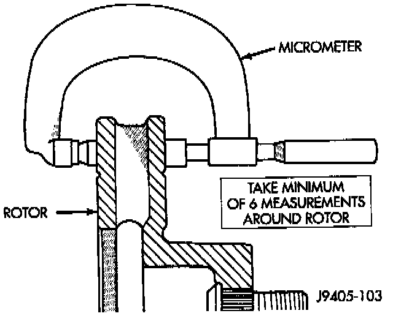
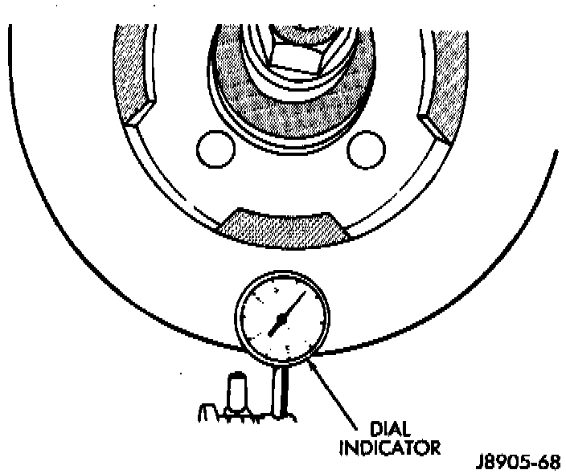

Front
MINIMUM THICKNESSRotor minimum usable thickness is 22.7 mm (0.89 inch). Do not resurface a rotor if machining would cause thickness to fall below this limit. Measure rotor thickness at the center of the brake shoe contact surface. Replace the rotor if worn below minimum thickness, or if refinishing would reduce thickness below the allowable minimum.

THICKNESS VARIATION
Variations in rotor thickness will cause pedal pulsation, noise and shudder. Measure rotor thickness at four to six points around the rotor face. Position the micrometer approximately 3/4 inch from the rotor outer circumference for each measurement. Thickness should not vary by more than 0.013 mm (0.0005 inch) from point to point on the rotor. Refinish or replace the rotor if necessary.

LATERAL RUNOUT
Check rotor lateral runout whenever pedal pulsation, or rapid, uneven brake lining wear has occurred. The rotor must be securely clamped to the hub to ensure an accurate runout measurement. Secure the rotor with the wheel nuts and 4 or 5 large diameter fiat washers on each stud. Use a dial indicator to check lateral runout. Maximum allowable rotor lateral runout is 0.13 mm (0.005 inch).